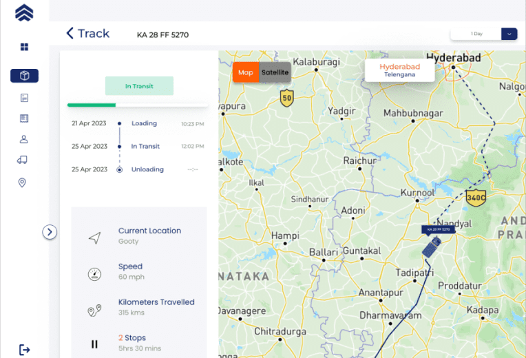

STREAMLINING LOGISTICS OPERATIONS: THE BENEFITS OF AUTOMATED INDENT MANAGEMENT
INTRODUCTION
Efficient indent management is crucial in the logistics industry, as it directly impacts supply chain optimization, inventory control, and customer satisfaction. Traditionally, indent management has been a manual and time-consuming process, prone to errors and delays. However, with the advent of automation, logistics businesses can revolutionize their indent management processes. In this blog post, we will explore the benefits of automated indent management and how it can streamline operations, improve efficiency, and drive business success.
1. ENHANCES ACCURACY AND REDUCE ERRORS
Automated indent management systems
significantly enhance
accuracy and reduce
errors in logistics operations.
By eliminating manual data
entry, these systems
eliminate the risk of typos,
incorrect quantities, and other transcription errors. Real-time validation and verification capabilities ensure that indents comply with predefined criteria, preventing the submission of incomplete or erroneous information. Standardizing data formats and integrating with master data sources maintain consistency and provide accurate product descriptions, pricing, and supplier details. Automated systems also generate alerts and notifications for potential errors, allowing prompt resolution. Detailed audit trails and revision history provide transparency and accountability, facilitating error identification and correction. Overall, automated indent management minimizes errors, improves data accuracy, and ensures reliable logistics operations. Liveasy recognizes its importance, and that’s why we provide Automated Indent Management facility at Liveasy.
2. IMPROVES EFFICIENCY AND TIME SAVING

Automated indent management
systems greatly improve efficiency
and save time in logistics
operations. These systems
streamline workflows by
automating the indent creation,
approval, and processing tasks.
With automated data capture from
electronic sources, manual data entry is eliminated, saving time and reducing the risk of errors. Additionally, automated systems facilitate seamless collaboration and communication among stakeholders, eliminating time-consuming back-and-forth exchanges. Liveasy understands the importance of time management in business and has adapted its services to provide its customers with automated indent management facility. By automating time-consuming tasks, eliminating manual errors, and providing quick access to information, these systems significantly enhance efficiency and productivity, allowing logistics teams to focus on higher-value activities and achieve operational excellence.
3. SEAMLESS COLLABORATION AND CONNECTIVIY
Automated indent management
systems play a crucial role in
facilitating seamless collaboration
and communication among
stakeholders in logistics
operations. By providing a
centralized platform, these
systems enable real-time access
to indent information for all involved parties, including buyers, suppliers, and warehouse personnel. This centralized approach eliminates the need for manual communication channels, such as emails or phone calls, streamlining the flow of information. Liveasy ensures that there is no communication error between shippers and transporters through its automated indent management system.

4. OPTIMAL INVENTORY MANAGEMENT

Automated indent management
systems significantly contribute to
optimal inventory management in
logistics operations. These systems
provide real-time visibility into
indent status, order fulfillment, and
inventory levels, enabling
businesses to make informed
decisions regarding their inventory.By automating the indent management process, these systems ensure that indents are promptly processed and fulfilled. This reduces lead times and helps prevent stockouts or excess inventory. Real-time updates on indent status allow businesses to monitor the progress of indents and adjust inventory levels accordingly, optimizing stock availability. Liveasy understands the importance of inventory management and that’s why we provide our customers with the best of services.
5. SCALABILITY AND ADAPTABILITY
Scalability: As businesses grow
and their indent volumes increase,
manual indent management
processes can become
overwhelming and prone to
errors. Automated systems can
easily scale to handle larger
indent volumes without
sacrificing efficiency. Whether it's processing hundreds or thousands of indents, automated systems can handle the load and maintain consistent performance. They can accommodate the growing demands of the business without compromising on accuracy or speed. Adaptability
Logistics businesses often deal with diverse product categories, changing supplier networks, and evolving customer requirements. Automated indent management systems can adapt to these dynamic environments. They offer flexibility in configuring indent workflows, incorporating custom business rules, and accommodating unique indent requirements. We at Liveasy acknowledge the necessity to grow and adapt the business with time, and that’s why we provide our customer’s with automated indent management services.
Logistics businesses often deal with diverse product categories, changing supplier networks, and evolving customer requirements. Automated indent management systems can adapt to these dynamic environments. They offer flexibility in configuring indent workflows, incorporating custom business rules, and accommodating unique indent requirements. We at Liveasy acknowledge the necessity to grow and adapt the business with time, and that’s why we provide our customer’s with automated indent management services.
CONCLUSION
Automated indent management brings significant benefits to logistics businesses, including enhanced accuracy, improved efficiency, streamlined collaboration, optimal inventory management, better supplier relationships, and scalability. By leveraging automation technology, we at Liveasy have streamlined our indent management processes to reduce errors, save time, and ultimately deliver superior service to our customers. Embracing automated indent management is a key step towards achieving operational excellence, and Liveasy is always there to navigate its customers towards hassle free logistics.